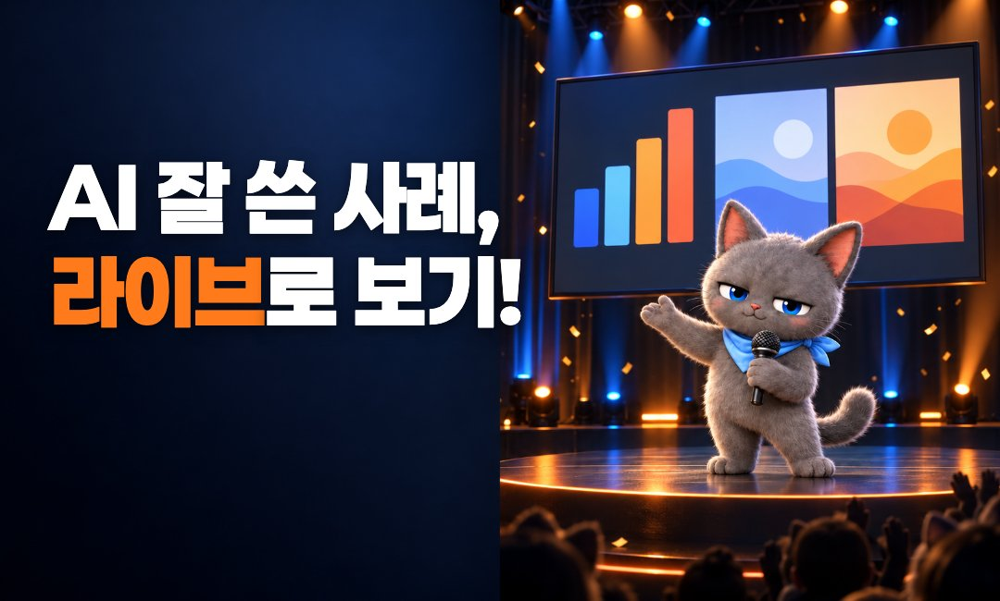
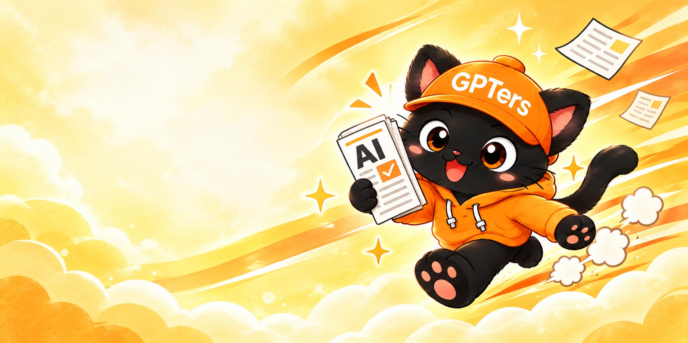
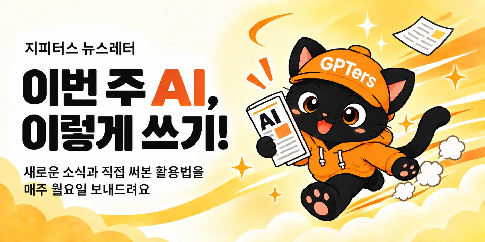
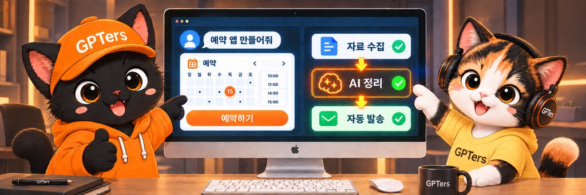

한 장을 봐도
지피터스답게
지피터스는 AI를 함께 공부하고 성장하는 사람들이 모인 커뮤니티예요.
배너 한 장, 화면 하나도 누가 만들든 지피터스답게 나오도록 기준을 한곳에 모았어요.
AI와 사람이 같이 보는 디자인 시스템 👀
사람은 이 페이지를, 내 AI는 DESIGN.md를 읽어요. 기준이 같으니 누가 만들어도 결과가 같아요.
원칙
모든 판단의 기준이에요. 작업마다 마케팅 디자인인지 프로덕트 디자인인지 먼저 정해요.
바깥으로 내보내 멈추게 하는 건 마케팅,
사람이 들어와 쓰는 화면은 프로덕트예요.
어느 쪽이든 밋밋한 "무난한" 시안은 탈락이고, 글자는 늘 잘 읽혀야 해요.
강렬하게
기준: 바깥으로 내보내 멈추게 하는 것
판매·모집·할인·마감 배너, 광고, SNS 카드뉴스, 이벤트 썸네일, 뉴스레터 배너, 소개·제안 자료. 멈추게 하고 바로 누르게. 취향 키워드를 전부 써요: 3D 기울임 제목, 불꽃·속도선, % 배지·리본·CTA 버튼, 장면 안에서 크게 연기하는 캐릭터.
정제하되 트렌디하게
기준: 사람이 들어와 쓰는 화면
gpters.org 사이트·스터디 페이지·랜딩·LMS처럼 사람이 쓰는 화면. 헷갈리지 않고 다음 행동을 바로 하게, 오래 봐도 질리지 않게. 여백 넉넉히, 주황은 주 버튼·핵심 숫자에만, 크림·먹색 바탕, 그라데이션·그레인은 은은하게, 스트릿 디테일은 한 화면에 하나, 영문은 Clash Grotesk. 문구는 UX 라이팅 원칙을 따라요.
같은 말(제목·브랜드명·날짜)을 여러 곳에 되풀이하지 않아요. 한 문구는 한 장에 최대 두 번.
아래 갤러리와 나란히 놓고 퀄리티를 비교해요. 갤러리 작업은 아직 검토 중이라 계속 바뀌어요.
다 만들면 375px로 줄여서 3초 안에 읽히는지 봐요. 작아 보이면 글을 덜어 내요.
로고
공식 파일만 써요. 비율과 색은 그대로 두고, 배경에 맞춰 주황, 흰색, 검정 중 하나를 골라요.


배너에 넣을 때
바깥으로 나가는 메타 광고, 카톡 플친, 썸네일엔 넣어요. gpters.org 안에 걸리는 배너는 이미 우리 사이트라 빼요.
불투명도 55%. 밝은 배경엔 주황, 어두운 배경과 주황 바탕엔 흰색. 배경 위에 떠 보이지 않고 그림의 일부처럼 보이게 해요.
워드마크 폭은 캔버스의 11% 안팎, 가장자리 여백 60px(1080 기준). 자리는 글자와 CTA가 없는 모서리 중 하나로, 지면별 예시를 참고해요.
색
주황은 한 장에 강조 하나. 보조색 팔레트는 따로 두지 않고, 주황 바탕 위 강조가 필요할 때만 포인트 노랑 하나를 써요. 클릭하면 HEX가 복사돼요.
대비 규칙
| 조합 | 대비 | 쓸 수 있는 곳 |
|---|---|---|
#EB5A10 on 흰색 | 3.50 | 큰 글자(24px↑, 굵게 18.7px↑)·아이콘만 |
#D34600 on 흰색 | 4.52 | 작은 주황 글자, 버튼 hover |
#D34600 on 크림·틴트 | 4.12~4.27 | 작은 글자 금지 → ink로 |
흰색 on #151413 | 18.4 | 어두운 배너 본문 |
#EB5A10 on #151413 | 5.26 | 어두운 배경 강조·자막 |
타이포그래피
제목은 페이퍼로지, 본문은 SUIT, 영문·숫자 강조는 Clash Grotesk. 공식 배포처 파일만 써요.
freesentation.blog/paperlogyfont
github.com/sun-typeface/SUIT
fontshare.com (수정·변환·외부 전달 금지)
크기 (1080 너비 캔버스, 모바일)
| 요소 | 크기 | 굵기 | 메모 |
|---|---|---|---|
| 배너·광고 헤드카피 | 96px 이상 (배너 높이의 약 17%) | Paperlogy 900 | 뜻 단위 두 줄. 외곽선은 요청 시에만 |
| 카드뉴스 표지 제목 | 80~96px | Paperlogy 800 | 두껍게 뭉치면 한 단계 낮춤 |
| 소제목 | 56px 이상 | SUIT 700 | |
| 본문 | 48px 이상 | SUIT 500 | 줄 간격 1.5~1.6 |
| 가장 작은 글자 | 40px 이상 | SUIT 500~700 | 캡션·출처·페이지 번호 포함 |
간격 · 모서리 · 입체감
8 · 16 · 24 · 32 · 48 · 64 · 80. 카드뉴스 좌우 여백 80px(최소 60).
버튼 8px · 카드 12~16px · 컨테이너 20px · 라벨 알약 999px.
레이어 겹침·돌출 그림자·글로우·그라데이션을 써요. 유리 효과(글래스모피즘)는 쓰지 않아요.
접근성
- 작은 글자는 대비 4.5:1 이상
- 375px로 줄여 3초 가독성 확인
- 가격·기간·환불은 이미지 밖 텍스트로도
- alt는 핵심 숫자와 내용을 문장으로
- 작은 글자에
#EB5A10 - 요란한 배경 위 작은 글자
- 색만으로 뜻 전달
- 물결표 범위(2~4주 → 2주에서 4주)
카피 원칙
배너 한 장에 들어가는 글자를 정하는 순서예요. 글자를 다 정한 뒤에 디자인을 시작해요.
이 장을 본 사람이 기억할 한 가지를 먼저 정해요. 그게 헤드카피가 되고, 그 안의 핵심 단어 하나만 주황으로 강조해요.
헤드(기억할 한 가지) → 서브(읽는 사람의 이득이나 근거) → 라벨(무슨 얘기인지 맥락) → CTA(할 행동). 크기와 굵기는 이 순서대로 작아져요.
헤드, 서브, 라벨, CTA가 각자 다른 정보를 맡아요. 같은 말이 두 군데 나오면 한쪽을 지우고 빈자리에 새 정보를 넣거나 그냥 비워요.
예: 라벨 "AI 스터디 모집" + 헤드 "4주 동안 AI 마스터하기" + CTA "스터디 보기" → 라벨은 "지금 모집 중"으로 바꿔 시점을 맡겨요.
한 장에 문장 3~4개. 작아 보이면 글자를 줄이지 말고 글을 덜어요. 줄표와 가운뎃점은 최대한 피하고 쉼표, 줄바꿈, 말로 풀어요. 범위도 말로 써요(2주에서 4주).
구매 → 신청, 수강생 → 참여자. 숫자는 대외 정본만 써요(누적 참여자 8,000명+ 등, 마케팅 위키 data/benchmarks.md).
CTA
주 CTA는 주황 면 버튼 하나. 보조 행동이 꼭 필요하면 테두리 버튼이나 글자 링크로 약하게 둬요. 버튼은 두 개까지.
누르면 생기는 일을 그대로 써요. "스터디 보기", "구독하기", "설명회 신청하기". 헤드에 쓴 말을 버튼에서 다시 쓰지 않아요.
굵게 18.7px 이상이면 #EB5A10, 그보다 작으면 #D34600, 주황 바탕 위에서는 먹색 #151413. 반경 8px, 알약형은 999px.
형태
| 형태 | 쓰는 지면 | 규칙 |
|---|---|---|
| 이미지 밖 HTML 버튼 | 웹 홈 사이드바, 뉴스레터 상단 | 이미지엔 헤드만. 버튼은 글자로 따로 둬서 이미지가 안 떠도 눌려요. |
| 이미지 안 사각 버튼 | 스터디 목록·상세 상단 띠 | 헤드 아래 왼쪽, 띠 전체도 링크. |
| 알약 버튼 | 메타 1:1 | 짧은 동사 2~5자. |
| 하단 주황 띠 | 메타 4:5 | 맨 아래 150px 띠에 문구와 화살표 하나. |
CTA가 없는 지면
메타 9:16·1.91:1, 카톡 플친. 버튼 자리를 비워 두고, 헤드 마지막 말과 플랫폼 버튼 문구를 맞춰요(헤드 "라이브 설명회" + 버튼 "신청하기").
블로그·og·유튜브. 헤드가 곧 누를 이유예요. "무엇을 얻는지"가 제목에 보이게 쓰고, 라벨로 글 종류(사례, 실습)를 알려요.
행동 대신 다음 단서를 남겨요: 날짜, 시간, 찾아올 키워드. 버튼 모양은 실제로 눌리는 지면에만 써요.
배너 키트 확정 전
기준작(참고 배너)부터 아직 검토 중이에요. 여기 수치를 정답으로 쓰지 말고, 시안을 만들 때 출발점으로만 써요. 기준작이 확정되면 수치를 다시 재서 바꿔요.
뉴스레터 배너 시안을 픽셀로 재서 만든 부품이에요. 모든 크기가 배너 높이 비율이라 규격이 바뀌어도 그대로 맞아요. 손으로 수치를 바꾸지 않고 조립만 해요. 파일: assets/kit/banner-kit.css
이렇게 쓰기!
매주 월요일 보내드려요
왼쪽 가운데 쪽 자리(.gb-text)는 헤드카피 위아래로 라벨·서브카피·버튼이 함께 들어갈 때만 써요. 헤드카피만 있으면 거기 두지 않아요(애매하게 떠 보여요).
글자가 적을 때(헤드카피만) 허용하는 자리 셋 · 좌상단 .gb-text--top / 상단 중앙 한 줄 .gb-text--top-center / 하단 중앙 한 줄 .gb-text--bottom-center. 어느 쪽이든 그림이 캔버스 전체를 채우고, 왼쪽을 단색 판으로 비우지 않아요.
이렇게!

| 부품 | 클래스 | 규격(배너 높이 H 기준) |
|---|---|---|
| 틀 | .gb --W --H | 어두운 배너 .gb--dark |
| 글자 덩어리 | .gb-text | 왼쪽 5%W · 위 17%H · 최대 폭 50%W |
| 헤드카피만일 때 | .gb-text--top --top-center --bottom-center | 좌상단(위 9%H) · 상단 중앙(위 7%H) · 하단 중앙(아래 8%H) |
| 글자 뒤 대비 | .gb-scrim --light --top --bottom | 글자 쪽에서 옅어지는 그라데이션 |
| 라벨 | .gb-label | SUIT 700 · 6.2%H |
| 헤드카피 | .gb-head + .gb-accent | Paperlogy 900 · 17%H · 줄 간격 1.08 · 두 줄 |
| 서브카피 | .gb-sub | SUIT 600 · 5.7%H · 줄 간격 1.25 |
- 그림은 캔버스 전체에 장면째 깔고, 캐릭터는 오른쪽에 크게. 글자 쪽도 같은 배경이 이어지게(단색 판으로 자르지 않기)
- 최종 규격 비율 그대로 그림을 만들기
- 렌더 뒤 글자가 그림에 닿지 않는지 눈으로 확인
- 글자가 적으면(헤드카피만) 타이틀을 좌상단
.gb-text--top에 붙이고 그림이 나머지를 채우게 - 글자가 배경에 묻히면
.gb-scrim(그라데이션)으로 대비 맞추기
- 다른 비율 그림을 잘라서 캐릭터를 글자 쪽으로 밀기
- 글자를 줄여서 억지로 끼우기
- 한 단어만 한 줄에 남기는 줄바꿈
- 왼쪽을 단색 판으로 비워 두고 그림을 오른쪽 절반에만 넣기(빈 배너가 돼요)
캐릭터 그림 (bbojjak-art)
캐릭터 장면은 bbojjak-art 스킬로 그리고, 글자와 버튼은 배너 키트로 얹어요. 그림 안에 글자를 그리지 않아야 문구를 고치고 지면을 바꿀 수 있어요.
| 지면 | --shape | 얹는 법 |
|---|---|---|
| 1080×650, 1200×630, 1200×628 | landscape (3:2) | 위아래를 조금 잘라 써요. 캐릭터는 오른쪽 절반 안에. |
| 1200×400 띠 | landscape (3:2) | 절반 가까이 잘리니 캐릭터를 작게, 위아래 여백을 넉넉히 그려요. |
| 1080×1080 | square (1:1) | 그대로. |
| 1080×1350, 1080×1920 | portrait (2:3) | 4:5는 위아래를 잘라요. 9:16은 위 250px, 아래 340px에 같은 배경을 이어 붙여요. |
--say를 빼요. 스킬 기본값은 매 컷 손글씨 한 줄이지만, 배너는 글자를 키트로 얹어요.--extra에 글자 자리를 적어요: "왼쪽 45%는 캐릭터와 소품 없이 같은 배경이 이어지는 빈 공간, 캐릭터는 오른쪽에 크게".- 배경은 캔버스 전체에 장면째. 글자가 묻히면 그림을 다시 그리지 않고
.gb-scrim으로 대비를 맞춰요.
generate.sh "노트북 앞에서 신나게 달려가는 모습" --shape landscape \ --extra "왼쪽 45%는 캐릭터와 소품 없이 같은 노란 하늘이 이어지는 빈 공간, 캐릭터는 오른쪽에 크게"
지면별 배너 예시 초안
우리가 실제로 쓰는 지면 9개예요. 유료 광고는 메타만 해요. 글자 → CTA → 그림 순서로 정하고, 지면이 작아지면 서브, 라벨, 헤드 줄 수 순으로 덜어요. 문구는 예시고, 그림 자리는 화면 카드 도형으로 대신했어요.
자사 웹·뉴스레터
AI 마스터!
- 글자
- 이미지 안엔 헤드카피만, 좌상단 두 줄. 라벨·서브·버튼은 이미지 밖 글자로.
- CTA
- 이미지 아래 HTML 버튼 한 개. 메일은 이미지가 꺼져도 보여요.
- 그림
- 오른쪽에 실사용 화면이나 멤버 결과물 카드 둘 겹침. 글자 쪽도 같은 배경이 이어져요.
- 지킬 것
- 헤드가 그림에 닿지 않기. 뉴스레터는 JPG 약 250KB, WebP 금지(아웃룩).
- 글자
- 라벨 하나, 헤드 한 줄(12자 안팎). 서브카피는 뺐어요.
- CTA
- 헤드 아래 왼쪽에 먹색 버튼 하나(주황 바탕이라 먹색). 띠 전체도 링크.
- 그림
- 오른쪽 끝에 화면 카드 둘. 높이가 낮아서 장면 그림 말고 소품으로.
- 지킬 것
- 높이가 낮아 두 줄 헤드 금지. 주황 위 강조는 노랑 한 가지.
메타 광고
AI 마스터하기
- 글자
- 라벨 하나, 헤드 두 줄(120px 이상). 서브는 뺐어요. 핵심은 가운데 1080×1080 안.
- CTA
- 맨 아래 150px 주황 띠에 "행동 → ". 메타가 붙이는 버튼과 같은 말로 맞춰요.
- 그림
- 가운데에 실사용 화면이나 멤버 결과물 카드. 좌우 80px 안.
- 지킬 것
- 그리드에서 3:4로 잘려도 헤드와 그림이 남게. 띠는 잘려도 되는 정보만.
배웠어요
- 글자
- 숫자가 주인공. 라벨 하나, 숫자 250px, 헤드 두 줄. 숫자는 대외 정본만(누적 참여자 8,000명+).
- CTA
- 왼쪽 아래 알약 버튼 하나, 높이 120px.
- 그림
- 그림 없이 글자만으로 완성. 장면 그림 만들 시간이 없을 때 쓰는 유형이에요.
- 지킬 것
- 숫자는 Clash Grotesk. 같은 숫자를 헤드에서 되풀이하지 않기.

라이브 설명회
- 글자
- 라벨 하나, 헤드 두 줄(130px 이상). 위 250px 아래 340px는 비워요.
- CTA
- 이미지 안에 버튼을 그리지 않아요. 아래 340px에 플랫폼 버튼이 붙어요.
- 그림
- 캐릭터 장면은 이 유형 하나만. 세로 비율로 장면째 새로 생성해요.
- 지킬 것
- 오가닉 릴스는 아래 450·오른쪽 140을 비워요(채널 규격 표).
이렇게 쓰기!
- 글자
- 라벨, 헤드 두 줄, 서브 한 줄. 가로형이라 서브까지 담을 수 있어요.
- CTA
- 이미지 안에 버튼을 그리지 않아요. 메타가 아래에 붙이는 버튼과 같은 말로 맞춰요.
- 그림
- 오른쪽에 화면 카드. 글자 쪽도 같은 배경이 이어져요.
- 지킬 것
- 모바일 피드에서 폭이 줄어도 헤드 100px 이상. 가장자리 60px 안.
썸네일
따라 하기
- 글자
- 글 제목을 줄여서 헤드로. 두 줄, 라벨은 글 종류(사례·뉴스·가이드) 하나.
- CTA
- 없어요. 썸네일은 글로 들어가는 문이라 버튼이 필요 없어요.
- 그림
- 글 속 실제 화면이나 결과물 캡처. 없으면 화면 카드 도형.
- 지킬 것
- 가장자리 60px 안. 카톡·슬랙 미리보기에서 작게 잘려도 헤드가 읽혀야 해요.
이렇게 해요
- 글자
- 라벨 하나, 헤드 두 줄(150px 안팎). 제목과 같은 말을 되풀이하지 않고 짧게.
- CTA
- 없어요. 썸네일은 영상으로 들어가는 문이라 버튼이 필요 없어요.
- 그림
- 영상 속 장면이나 결과 화면. 없으면 화면 카드 도형.
- 지킬 것
- 오른쪽 아래 재생시간 자리 비우기. 작은 화면에서도 헤드가 읽혀야 해요.
카카오 플친
라이브 설명회
- 글자
- 헤드 두 줄만. 라벨·서브는 메시지 본문에 써요.
- CTA
- 이미지에 버튼을 그리지 않아요. 메시지 아래 버튼이 따로 붙어요.
- 그림
- 오른쪽 아래 소품 하나. 주황 면이 크면 채팅방에서 먼저 눈에 띄어요.
- 지킬 것
- 채팅 목록에서 작게 보여서 글자 2줄, 96px 안팎. 문구는 메시지 본문과 겹치지 않게.
채널 규격
| 채널 | 캔버스 | 규칙 |
|---|---|---|
| 인스타 카드뉴스 | 1080×1350 | 좌우 80px, 핵심은 가운데 1080×1080 |
| 릴스·쇼츠 | 1080×1920 | 광고: 위 250·아래 340px 비움 / 오가닉: 아래 450·오른쪽 140px |
| 웹 사이드바 배너 | 1080×650 | 이미지 안엔 큰 헤드카피만, 나머지 문구는 따로 |
| 유튜브 썸네일 | 1280×720 | 오른쪽 아래 재생시간 자리 비움 |
| 블로그 썸네일·og | 1200×630 | 가장자리 60px 안, 제목은 가운데 60% 폭 |
| 뉴스레터 히어로 | 폭 1280, JPG 약 250KB | WebP 금지(아웃룩) |
| 카카오 플친 | 800×600 | 글자 2줄 |
제작 흐름
사람이 만들든 AI 에이전트가 만들든 같은 순서예요.
갤러리
검토 중지인 팀장이 직접 만든 작업들이에요. 방향을 잡는 작업이고, 확정된 기준작은 아니에요.
레이아웃 참고

